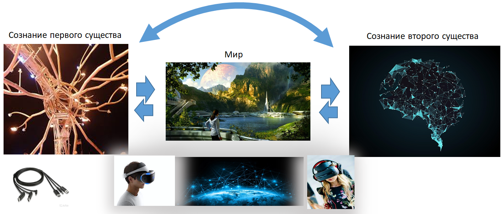
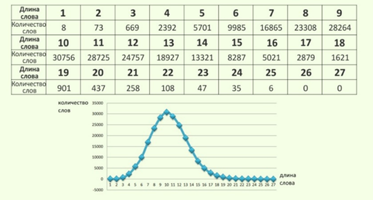
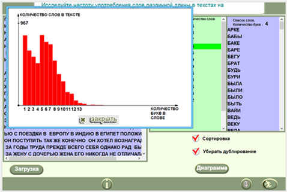

Лекция 50. Язык как система. Закономерности русского языка
Язык – это система с определёнными составом, структурой и свойствами
Язык является системой. Он функционирует и выполняет свою задачу (коммуникация в обществе) благодаря строгим законам языковой среды, которая возникает в обществе
эволюционно путем самосборки и является объективным отражением (моделью) окружающего нас мира.
Если бы язык рождался у каждого человека в мозге индивидуально и хаотично, то люди бы не понимали друг друга. Почему же мы понимаем друг друга?
То, что есть в мире, отражается в нашем сознании. Чтобы перенести книгу со стола на стул, надо отразить её в своём сознании как отдельную от остального сущность,
породить объект, создать понятие. Так как два человека существуют в одном и том же мире, то сознание одного человека будет подобно сознанию другого. Модели в мозге
разных людей, конечно, не идентичны (мы все проходим разный путь, читаем разные книги), но подобны. Благодаря подобию, мы можем понять друг друга, обладая общим
знанием причинно-следственных отношений в мире – коллективным сознанием.

То, что есть в голове человека, то же и есть на языке. Язык отражает сознание человека, но таким образом, он отражает и окружающий нас мир. Поэтому разные народы хоть и могут создавать разные языки, но перевод с языка на язык возможен, так как мир планеты Земля един.
Языки имеют особенности, связанные с географией места проживания народа. Например, у горных народов резче звуки, чтобы они легче преодолевали препятствия. В их речи больше падежей и предлогов, чем у жителей равнины, чтобы обозначить большее количество отношений во взаимном положении предметов.
Язык подобен мышлению. Мышление подобно устройству мира. Находясь в едином мире, наши языки подобны. Благодаря этому возможна коммуникация. Чем абстрактнее язык, тем больше непонимание между субъектами. Для понимания абстракций, не наблюдаемых в естественном мире, требуется взаимное общение, обучение, передача виртуальных миров из одного сознания в другое.
Язык – живое образование. Он всё время развивается, по мере того, как мы развиваем мир вокруг нас. Задача языка обеспечить достаточный объём понятий (словарный
запас языка), отражающий предметы и явления окружающего нас мира, и гибкость их сочетания между собой (отношения предметов). Какое-то время в языке происходит
накопление новых слов словаря, потом происходит его сжатие, абстрагирование. Язык расширяется иерархически (от звуков к слогам, далее словам, словосочетаниям, предложениям, текстам) и новыми грамматическими категориями (падежи, времена, предлоги, рода, новые части речи).
Если в каждом языковом фрагменте выполняются объективные законы, то они могут быть обнаружены научными методами. Сложное, если оно закономерно, всегда организуется
в систему. Систему познают путем построения её модели и последующей её проверки. Система выражается моделью и строится как обобщение частных фактов. На модели
можно решать прямые и обратные задачи, прогнозировать будущее, искать неизвестное. Модель системы - это совокупность списка элементов, характеризующая состав
языка, и связей, характеризующих структуру языка. В языке это соответствует словарю (элементы) и грамматике (связи).
В языке задачами являются: шифрование и дешифрование сообщений, перевод с одного языка на другой, структуризация различных сведений в единое целое, ответы на вопросы по тексту, обучение на текстах, образование новых слов и текстов. Сообщения появляются как мысли, образы, конструкции, отражающие в мозге окружающий нас мир для передачи их другим членам общества. А так как общественное действие сильнее индивидуального, то язык появился и служит для повышения кпд жизнедеятельности общества и минимизации его рисков.
Задания
Загрузите словарь якутского и русского языка. Сравните их объём. Объясните разницу. Сравните там же количество слов, отражающих понятия «снег». Почему появляются новые понятия?
Сколько наименований цветов вы знаете (оригинальных слов, составных названий)? Сколько наименований запахов вы знаете? Зачем в смс применяют смайлики? Что может заменить смайлик?
Напишите звуками типовое обращение «Здравствуйте, Александр Александрович!». Засеките время на полное классическое произношение фразы и бытовое. Объясните разницу.
Приведите примеры упрощения правил в русском или английском языках. Почему так происходит? Почему люди понимают текст даже при упрощённом его написании.
Выпишите категории русского языка и варианты их применения в частях речи. Проверьте себя по электронным плакатам и упражнениям с сайта.
Выпишите и дайте определения и русский аналог новым словам, появляющимся в речи. Например, «чилить», «файл», «сервер», «фиксить», «кринж», «олды», «селфи», «кешбэк», «квест», «инсайт», «чекап», «креатив», «пранк», «пролонгация», «комьюнити», «клининг», «свобер».
Как понять в каком смысле употреблено слово «мамы»: Мамы с детьми пошли на прогулку. Мамы нет дома.
Загрузите упражнение с сайта. Прочитайте текст без согласных, потом без гласных. Для чего служат гласные, для чего – согласные? Почему в языке гласных букв меньше, чем согласных?
Разберите по частям предложения и частям речи: «Письма знакомой из Минска не заменят фотографии его любимой и милой дочери Марии». Сколько здесь действующих лиц? Задайте все возможные вопросы к членам предложения, сформулируйте ответы на вопросы. Подсчитайте сколько различных смыслов несёт это предложение?
Как передают смысл и как выражаются эмоции в устной речи, в письменной речи?
Как разделить на классы части слов: рука, нога, изба, жена, рукой, руку, руками, театр, смотр, Петр? Как называются эти классы и для чего они служат в языке?
Для чего в словах ударение? Что заменяет ударение на письме? Приведите пример слов с двумя ударениями.
Как в рукописном источнике информации на незнакомом языке определить, каким образом он был написан: слева – направо, справа – налево, сверху – вниз или по колонкам.
Упражнение 1
Что означают слова «бивола» или «волит»?
Вряд ли Вы определите их смысл. Даже то, к какой части речи они относятся, сказать затруднительно.
Упражнение 2
Попробуйте понять следующее языковое сообщение, построенное академиком Л.В. Щербой по законам русского языка: «Глокая куздра щеко кудланула бокра и кудрячит бокрёнка».
Очевидно, что несмотря на то, что все слова, использованные в сообщении, Вам неизвестны, тем не менее, информация из этого языкового фрагмента извлекается.
На метаязыке это означает, «куздра» - существо 1 женского рода, «бокр» - существо 2 мужского рода, «бокрёнок» - ребенок существа 2,
«глокая» - характеристика существа 1, «кудланула» - действие существа 1 над существом 2, «кудрячит» - действие существа 1 над ребенком
существа 2, «щеко» - характеристика действия.
Если смысл фразы понятен, то где тогда находится смысл?
Смысл находится не в корнях слов (они могут быть любыми), смысл понятен благодаря окончаниям. Окончания слов в русском языке служат для связи слов в предложении.
Смысл находится в связях между элементами системы. Логика нейронной сети, как вы помните, тоже хранится в коэффициентах связей нейронов. Связи играют
огромную роль. В целом, как мы уже обсуждали, технологии и кпд общества зависят от количества связей в обществе.
Упражнение 3
Прочитайте текст, составленный Людмилой Петрушевской. Ответьте на вопросы: Кто подудонился? С кем была Калуша? Что нельзя трямкать? Что сделала бутявка?
«Сяпала Калуша с калушатами по напушке. И увазила бутявку, и волит: - Калушата, калушаточки! Бутявка! Калушата присяпали и бутявку стрямкали. И подудонились. А Калуша волит: - О её! О её! Бутявка-то не кузявая! Калушата присяпали, бутявку вычучили. Бутявка вздребезнулась, сопритюкнулась и усяпала с напушки. А Калуша волит калушатам: - Не трямкайте бутявок, бутявки дюбо некузявые. От бутявок дудонятся. А бутявка волит за напушкой: - Калушата подудонились! Калушата подудонились! Зюмо-зюмо некузявые! Пуськи бятые!»
Что можно из данного текста выяснить?
Сяпала - гл. несоверш. вида, 1 спр, изъяв.накл., пр.вр., 3 лицо (какое-то действие, скорее всего обозначающее движение).
Калуша - сущ., ж.р., 1 скл., ед.ч., им.п. (какое-то существо). с – предлог. калушатами - сущ., мн.ч., т.п. (дети какого-то существа (Калуши)). по – предлог.
напушке - сущ., ж.р., 1 скл., ед.ч., п.п. (место, где происходит действие). и – союз. увазила - гл. соверш. вида, 2 спр, изъяв.накл., пр.вр.,
3 лицо (какое-то действие, скорее всего обозначающее слово “увидела” или его синоним). бутявку - сущ., ж.р., 1 скл., ед.ч., в.п.
(какое-то другое существо). и – союз. волит - гл. несоверш. вида, 2 спр, изъяв.накл., наст.вр., 3 лицо (какое-то действие, скорее всего обозначающее
речь).
Сначала текст шокирует, однако постепенно (через 1-3 минуты) смысл сообщения становится понятен. Наша нейронная сеть строит модель сообщения.
Если это упражнение показалось Вам легким, можете еще больше исказить текст и предложить почитать его другим людям. Тем самым можно определить
критический уровень шума, при котором текст перестаёт читаться (этот эксперимент определяет избыточность языка).
В сообщении пропущен (или заменён) ряд букв. При прохождении сообщения через канал связи между источником информации и приёмником оно всегда в той или иной мере подвергается искажениям под воздействием внешних возмущений. Чем больше букв пропущено или заменено, тем больше шум среды, который меняет сообщение. Так как языковое сообщение избыточно, то даже при определенном уровне шума (пока уровень шума меньше избыточности), сообщение понять можно.
Однако, нас интересует машинный способ решения этой задачи. Приведём один из возможных вариантов решения. Главный метод искусственного интеллекта - определение «сходств-различий». Сходство слов ищем по совпадению со словами из словаря русского языка.
Сначала распознаются лишь некоторые слова:
6ЫЛD – БЫЛО, ЛЮ9Т – ЛЮДИ, MDГ17 – МОГУТ, Э7D – ЭТО, Э7DЙ – ЭТОЙ, Э7DM – ЭТОМ, D6 – ОБ, 5Г4Ч4Л4 – СНАЧАЛА, MDЖ37 – МОЖЕТ, K4KR3 – КАКИЕ.
После подстановки имеем текст следующего вида:
94LLD3 5DD6T3LR3 БDK43Ы8437, КАКИЕ 19R8R73ЛЬLЫ3 83TR МОЖЕТ 93K47Ь L4Ж Г431M! 8БЗЧ47ЛЯЮTR3 83TR! СНАЧАЛА ЭТО БЫЛО 7Г19LD, LD 53Й445 L4 ЭТОЙ 57ГDК3 84Ж Г431M ЧR74З7 ЭТО 487DM47RЧ35KR, L3 3491MЫ84Я5Ь ОБ ЭТОМ. ГDГ9R5Ь. ЛRЖЬ DБГЗ9ЗЛЗLLЫЗ ЛЮДИ МОГУТ БГD4R747Ь ЭТО.
То есть: 6 – Б, 4 – А, D – О, 7 - Т. И так далее.
Продолжая расшифровку и учитывая уже полученные соответствия через 3-4 итерации, имеем:
ДАННОЕ СООБЩЕНИЕ ПОКАЗЫВАЕТ, КАКИЕ УДИВИТЕЛЬНЫЕ ВЕЩИ МОЖЕТ ДЕЛАТЬ НАШ РАЗУМ! ВПЕЧАТЛЯЮЩИЕ ВЕЩИ! СНАЧАЛА ЭТО БЫЛО СЛОЖНО, НО СЕЙЧАС НА ЭТОЙ 57ГDК3 ВАШ РАЗУМ ЧИТАЕТ ЭТО АВТОМАТИЧЕСКИ, НЕ ЗАДУМЫВАЯСЬ ОБ ЭТОМ. ГОРДИСЬ. ЛИШЬ ОПРЕДЕЛЕННЫЕ ЛЮДИ МОГУТ ПРОЧИТАТЬ ЭТО.
(Самое сложное слово: 57ГDК3 – СТРОКЕ).
Упражнение 5
По рзелульаттам илссеовадний одонго анлигйсокго унвиертисета, не иеемт занчнеия, в кокам пряокде рсапожолены бкувы в солве. Галвоне, чотбы преавя и пслоендяя бквуы блыи на мсете. Осатьлыне бкувы мгоут селдовтаь в плоонм бсепордяке, все-рвано ткест чтаитсея без побрелм. Пичрионй эгото ялвятеся то, что мы чиатем не кдаужю бкуву по отдльенотси, а все солво цликеом.
Читая данный текст не каждый обратит внимания, что буквы в нём стоят в полном беспорядке, но, однако это не вызывает затруднений при чтении. Эксперимент показывает, что буквы в слове имеют различный вес для понимания. Самые важные буквы стоят вначале слова и в конце (окончания для связи слов в предложении).
Фундаментальный факт из теории информации: язык содержит в себе информационную избыточность для борьбы с шумом. Минимально избыточны короткие слова. Например,
слово «бук», которое при однократной ошибке легко переходит и ошибочно воспринимается на приемной стороне как другое слово типа «бок», «лук», «жук», «бур» и
далее, если уровень шума 2 - в слова «бог», «бор», «сок» и так далее. Расстояние между словами «бук» и «сок» равно 2 и называется
кодовым расстояниемR.
Из теории известно, что минимальный объём текста на русском языке, который может быть воспринят приёмником однозначно – 70 знаков (расстояние единственности).
Короткие слова расположены тесно (R мало) и их мало. Короткие слова экономят время, которое является самым ценным ресурсом (время - единственный
невосстановимый ресурс). Коротких слов хочется иметь побольше. Грубая прикидка показывает, что трехбуквенных слов не более 33*33*33, где 33 –
количество букв, которые могут стоять на первом, втором или третьем месте в слове. Реально в словаре русского языка содержится 669 трёхбуквенных слов
(по данным эксперимента на множестве корпусов текстов в русскоязычном сегменте Интернета). То есть несмотря на желание использовать все короткие слова, язык тем
не менее не использует все доступные варианты, сохраняя достаточное кодовое расстояние между словами. (Разумеется, при подсчёте следует учитывать то, что есть в
принципе непроизносимые варианты типа «ЭЪЫ»).
Длинные слова, например, «электрификация», восстанавливаются при утрате некоторых букв легче, так как они расположены на большом расстоянии R друг от друга.
Длинных слов в языке потенциально может быть много, но такие слова не выгодны с точки зрения времени произношения.
Обозначим: Х – количество букв в слове, Y – количество слов длиной Х букв. В результате глобального эксперимента с русскоязычным сегментом
Интернета после составления словаря русского языка получена кривая Y(X). Если не учитывать частоту употребления слов в речи, а только подсчитать
количество слов Y и их длину X по словарю (каждое слово учитывается только один раз), то пик кривой приходится на X=10. То, что кривая
носит плавный характер, говорит о том, что это объективная закономерность. По мере усложнения окружающего мира пик кривой будет, очевидно, смещаться вправо.

Зависимость количества слов русской речи от длины слова (по словарю, без учета частоты употребления слов)
Если статистику собирать не по словарю, а по литературным текстам, то наибольшее количество слов соответствует словам длиной 6 букв. Объясняется это тем, что люди, экономя время, предпочитают употреблять в речи более короткие слова. Употребление смайликов для выражения эмоций значительно экономит время на описании чувств.

Употребляемость слов по их длине в литературной речи (по литературным текстам с учетом частоты употребления слов). Объясните наличие двух пиков на графике. Обратите внимание на экспоненциальный характер графика
Используемые на практике слова с математическим ожиданием длины в 6 букв покрывают современные потребности языка в обозначении окружающих предметов, сущностей и явлений, уравновешивая уровень шума среды и количество комбинаций легко произносимых звуков. Язык сам находит равновесное состояние под давлением разнонаправленных факторов: надёжность приёма информации, экономия времени на передачу информации и необходимое разнообразие языка.
Справка. Самое длинное слово русского языка: сельскохозяйственномашиностроительный (37 букв), а среди специализированных слов:
тысячадевятьсотвосьмидесятидевятимиллиметровый (46 букв) или тетрагидропиранилциклопентилтетрагидропиридопиридоновые (55 букв).
Задания
Сыграйте с друзьями в игру «Испорченный телефон». Посмотрите насколько при определенном уровне шума искажается смысл слов. Загрузите упражнение с сайта. Проверьте свои выводы по модели.
Загрузите упражнение с сайта. Постройте график значения энтропии от длины слова.
Загрузите упражнение с сайта. Загрузите текст литературного произведения. Объясните характер графика «Количества слов от длины слова».
Сравните графики нескольких произведений одного автора между собой. Сканы графиков перенесите в тетрадь. Объясните сходство и разницу графиков. Проследите изменение графика в зависимости от даты написания произведения одного и того же автора.
Сравните графики разных по размеру произведений одного и того же автора. Измерьте и объясните разницу. Увеличивая объём анализируемого текста одного произведения определите, как меняется график в зависимости от объёма фрагмента?
Сравните графики литературных произведений нескольких авторов. Объясните сходство и разницу.
Найдите средний график по множеству литературных произведений нескольких авторов. Найдите величину отклонения графика произведения конкретного автора от среднего графика.
Загрузите упражнение с сайта «База слов русского языка». Постройте график количества слов в зависимости от длины слова. Выпишите все однобуквенные и двухбуквенные слова и объясните их назначение в языке.
Постройте графики «Словарная частота N-буквенных слов и употребляемая в разговорной литературной речи».
Загрузите упражнение с сайта. Найдите количество трёхбуквенных слов с кодовым расстоянием равным 1, 2, 3.
Загрузите упражнение с сайта. Рассмотрите модель существительного, прилагательного и глагола. Постройте математическую алгебраическую модель выбранной части речи, закодировав буквы числами. Нарисуйте график математического выражения.
Подсчитайте количество слов словаря и общее количество букв в них. Найдите среднее кодовое расстояние R. Найдите среднее количество букв в самом длинном слове гипотетического словаря, в котором бы было R=1.